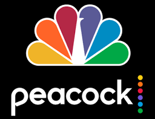

What Is The Office?
The Office is a show about the day-to-day lives of employees of the Scranton branch of Dunder Mifflin Paper Company. It is filmed in a mockumentary styled also focusing about their relationships with one another. The show stars Steve Carell as Michael Scott, Rainn Wilson as Dwight Schrute, John Krasinski as Jim Halpert and Jenna Fischer as Pam Beesly.

Typical episodes are around 22-42 minutes long. This show is based on The Office (UK) by Ricky Gervais and Stephen Merchant. The UK version of The Office was premiered in 2001 and only consisted of 14 episodes. The American version of The Office was then produced by Deedle-Dee Production and Reveille Productions with NBC and consisted of 201 episodes.
The Office’s pilot premiered March 24, 2005, and the finale premiered on May 16, 2013. They had a very successful 9 seasons for the show and have won many awards! Some awards they won were the Primetime Emmy Award for Outstanding Comedy Series in 2006, Screen Actors Guild Award for Outstanding Preformance by an Ensemble in a Comedy Series in 2007 and 2008, and Peoples Choice Award in 2010.
Where To Watch
The Office is a show that is owned by NBCUniversal. Originally the show was found on Netflix until 2021. The Office can now be found on the streaming service, Peacock, Amazon Prime Video, Vudu, Google Play and iTunes.


Intresting Facts
- The Office did not preform well for their first season, but their iTunes sales did great and saved the show for them to continue
- The show had over 40 Primetime Emmy nomination and 5 wins during their 9 seasons
- The episode ‘The Farm’ was created as a pilot for a spinoff show, but unfortunately was not picked
- Angela Kinsey and Jenna Fischer are real life best friends and started a podcast together in 2019 called ‘Office Ladies’ where they talk about behind the scenes for each episode